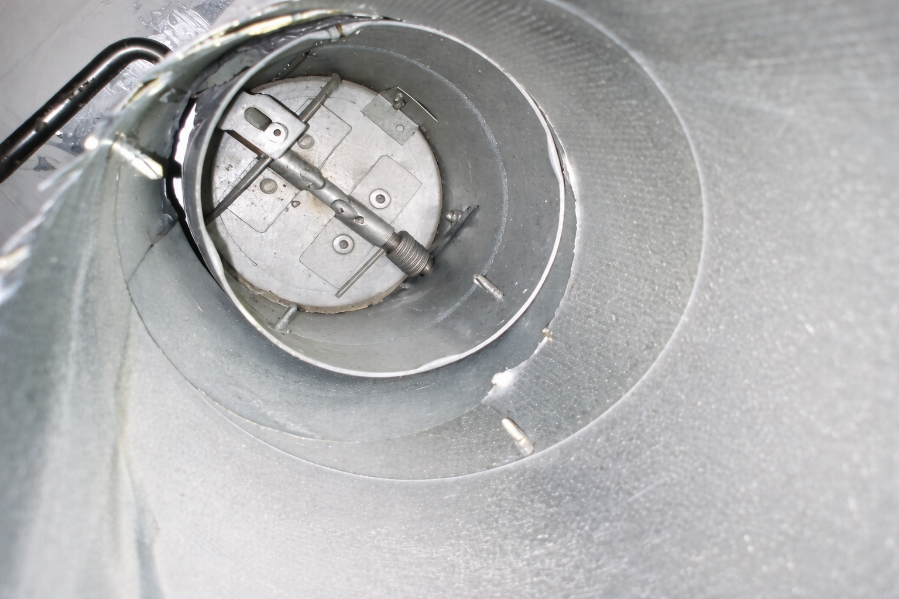
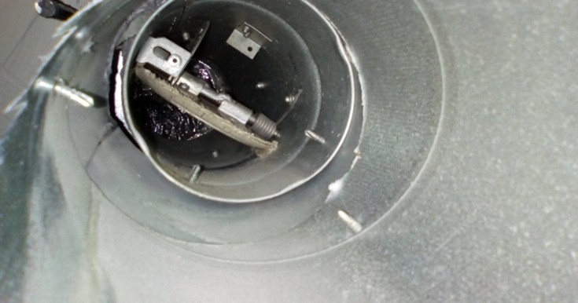
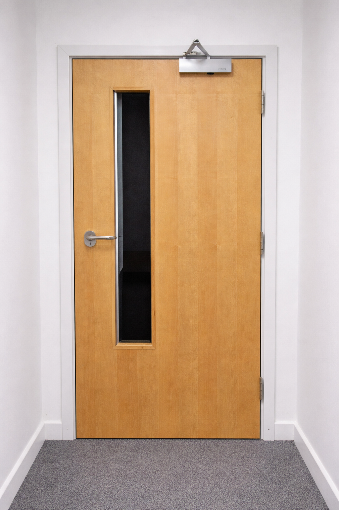

Passive Fire Protection Services
BM Trada approved, with Hasman and Envirograf certification supporting fire damper servicing, fire door support and passive fire protection works.





Fire Stopping Solutions
Compartmentation, penetrations and service sealing.
Click for moreFire Stopping Solutions
- Fire sealing around service penetrations, walls, ceilings and floors
- Compartmentation and penetration sealing using approved systems
- Fire stopping following renovation and refurbishment works
Fire Damper Testing & Reporting
Inspection, testing, records and remedial support.
Click for moreFire Damper Testing & Reporting
- Inspection, testing and certification support
- Comprehensive photographic and written reports
- Prompt completion of remedial works and re-certification support
Partition & Passive Fire Repairs
Fire-rated partition and cavity barrier remedials.
Click for morePartition & Passive Fire Repairs
- Fire-rated partition and cavity barrier repairs
- Rectification of damaged or non-compliant installations
- Coordination with renovation and maintenance schedules
Fire Door & Frame Works
Fire door, frame, upgrade and certification support.
Click for moreFire Door & Frame Works
- Repair and replacement of fire rated doors and frames
- Upgrades to meet required rating and performance standards
- Third-party certification support for fire doors
Works carried out with a focus on traceability, compliance and a clear professional finish.